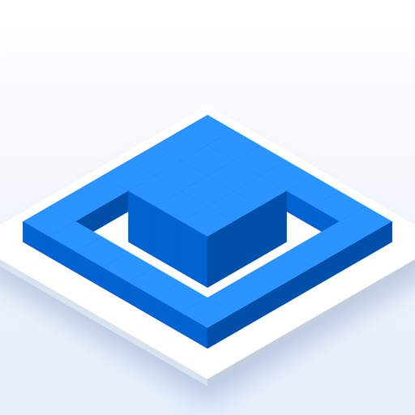

Ton image devient un QR code animé. Et des QR codes transportent un fichier d'un téléphone à l'autre, sans connexion.
Le défi du jour : « App utile ». QRocquis a deux onglets. Générer : ta photo ou ton texte se transforme en QR code, avec dix effets. Le plus fou, c'est la vue isométrique : le QR se lève en ville, en paysage ou en briques 3D, puis se remet à plat et se scanne. Tu exportes en GIF, en vidéo ou en image, pour une story, un menu ou une affiche.
Envoyer / Recevoir : un fichier défile en QR codes sur ton écran, l'autre téléphone les filme et le reconstruit, même s'il en rate un sur trois. Pas de Wi-Fi, pas de Bluetooth, pas d'Internet. Parfait pour un contact, une note, un mot de passe Wi-Fi ou une petite image.
Pensée pour le téléphone. Ajoute-la à ton écran d'accueil : elle marche ensuite sans connexion. Rien n'est envoyé, tout reste sur l'appareil.
Les chiffres arrivent bientôt.
Le code est sur GitHub.
Une nouvelle app tous les jours à 18 h.